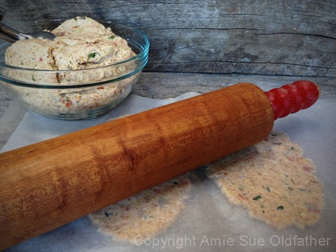
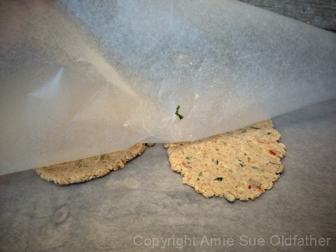
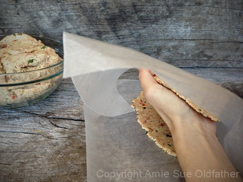
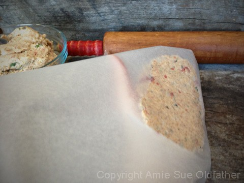
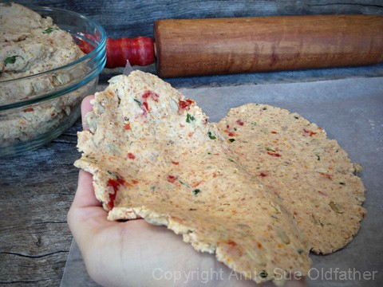

Caraway and Dill Crispy Flatbread

~ raw, vegan, gluten-free ~
Would you just look at those creases, those folds?? Not me—the flatbread photo! Oy! :) I’m having so much fun making flatbreads lately. They’ve quickly become a staple in this house.
I’m not sure why, but creating these folds (like the ones shown below) tickles me ruby red. And this coming from the get-out-the-ruler-it’s-cracker-making-time kind of gal.
Meaning: I usually like precision, clean edges, and I’m all about do-overs when something doesn’t look just right. Maybe I’m just relaxing in my prime age. Whatever it is, I’m going to embrace it and have fun—well, I always have fun anyway.
If you enjoy the taste of rye, this recipe is going to make you yodel from the rooftops. Is there a connection between rye and yodeling? Not sure, but there is now.
Unfortunately, rye has gluten, so I use caraway instead. Every time I make a recipe with caraway, I marvel at how much I enjoy this spice—but then, somehow, I forget about it hiding away in the cabinet. I can sit for hours sniffing the caraway seed and dill jars. Those aromas are just heavenly to me.
Here’s a fun fact: caraway is actually a member of the parsley family. It’s known to help calm upset stomachs and ease flatulence. And one more tidbit for your brain buffet—caraway seeds aren’t really seeds but the small ripe fruit of the caraway plant. That’s your educational session for today. Class dismissed! :) blessings, amie sue
Ingredients:
Yields 24 (1/4 cup batter each) or 48 (2 Tbsp batter each)
- 1 cup almond flour
- 3 Tbsp raw coconut flour
- 2 Tbsp dried dill
- 3 Tbsp caraway seeds, ground
- 1 tsp Himalayan pink salt
- 1 1/2 cup flax seeds
- 2 Tbsp water
- 1 Tbsp cold-pressed olive
- 1/4 cup maple syrup
- 2 Tbsp fresh lemon juice
Hand mix in:
Preparation:
- Soak the flax seeds in 2 1/2 cups of water for 30+ minutes. It should be very thick.
- In the food processor fitted with the “S” blade, place the almond flour, coconut flour, dried dill, ground caraway, and salt.
- Pulse together until combined.
- Place the dry ingredients in a medium-sized bowl and set aside.
- In the same food processor, place the flax seeds, water, olive oil, sweetener, and lemon juice. Process till everything is well incorporated. Pour into the bowl with the dry ingredients and mix.
- Add the almond pulp, and with your hands, mix everything really well.
- To create the flatbreads, use about 2 -4 Tbsp worth of dough. (depends on what size you want) Roll into an oval shape and place it on the teflex sheet that comes with the dehydrator or on parchment paper. I do two at a time. Cover with another sheet and with a rolling pin, use even pressure to press them out to a flatbread shape. They should be reasonably thin, no more than 1/4″ thick.
- See the photos below on how to transfer the flatbread from the teflex to your hand, to the mesh sheet.
- Leave the flatbreads plain or sprinkle extra sunflower seeds and basil. After sprinkling them on, with the palm of your hand, lightly press them into the dough.
- Sprinkle coarse sea salt on top before dehydrating.
- Dehydrate at 145 degrees for 1 hour then reduce to 115 (F) degrees for 6-10 hours or until dry.
- These should last several weeks in an airtight container. If they start to moisten a bit, return them to the dehydrator and dry until they firm back up.
Culinary Explanations:
- Why do I start the dehydrator at 145 degrees (F)? Click (here) to learn the reason behind this.
- When working with fresh ingredients, it is essential to taste test as you build a recipe. Learn why (here).
- Don’t own a dehydrator? Learn how to use your oven (here). I do, however honestly believe that it is a worthwhile investment. Click (here) to learn what I use.
The photos below were taken with a different recipe batter, but I wanted to
show you how I gave a rumpled look to the flatbread.
This is optional, but it is a lot of fun.

Press the measured out the batter between two pieces of wax paper.

Place your hand on the rolled out flatbread and flip it over so you can peel the wax
paper off, leaving the flatbread in your palm.


Cup your palm; this will cause ripples in the batter.

Holding that formation with your hand, turn your hand over and drop the flatbread
onto the mesh sheet that comes with the dehydrator. Leaving the folds in the batter.
Play around, add more bumps and bubbles. It gives it that baked appearance.
I hope these photos help.
© AmieSue.com